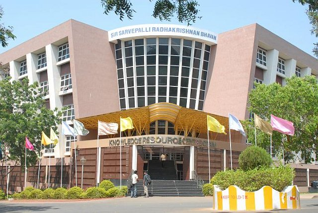

Gandhi Institute of Technology and Management (GITAM), formerly GITAM University and GITAM College of Engineering, is an institute of higher education with campuses in Visakhapatnam, Hyderabad and Bangalore in India. It was established in 1980 at Visakhapatnam, it was affiliated to Andhra University. In 2007, it was conferred the status of deemed university under Section 3 of UGC Act 1956. It was the first private engineering institute in Andhra Pradesh to receive university status. Its main campus at Visakhapatnam spreads over 110 acres. GITAM is a host to many student activities both professional and cultural as well.GITAM University Science & Activity CENTRE(GUSAC),Professional societies include ISTE, IEEE, CSI, IETE, IEI, ISOI and EWB. Cultural societies include Kalakriti, G-studio, G-Mag, E-Cell, NCC, NSS and other community services like Rotaract and Vivaan. The university offers 109 programs at undergraduate, postgraduate and Doctoral levels in Technology, Pharmacy, Science, Management, International Business, Architecture and Law.[1]
 Gandhi Institute of Technology and Management (GITAM), formerly GITAM University and GITAM College of Engineering, is an institute of higher education with campuses in Visakhapatnam, Hyderabad and Bangalore in India. It was established in 1980 at Visakhapatnam, it was affiliated to Andhra University. In 2007, it was conferred the status of deemed university under Section 3 of UGC Act 1956. It was the first private engineering institute in Andhra Pradesh to receive university status. Its main campus at Visakhapatnam spreads over 110 acres. GITAM is a host to many student activities both professional and cultural as well.GITAM University Science & Activity CENTRE(GUSAC),Professional societies include ISTE, IEEE, CSI, IETE, IEI, ISOI and EWB. Cultural societies include Kalakriti, G-studio, G-Mag, E-Cell, NCC, NSS and other community services like Rotaract and Vivaan. The university offers 109 programs at undergraduate, postgraduate and Doctoral levels in Technology, Pharmacy, Science, Management, International Business, Architecture and Law.[1]Gandhi Institute of Technology and Management (GITAM), formerly GITAM University and GITAM College of Engineering, is an institute of higher education with campuses in Visakhapatnam, Hyderabad and Bangalore in India. It was established in 1980 at Visakhapatnam, it was affiliated to Andhra University. In 2007, it was conferred the status of deemed university under Section 3 of UGC Act 1956. It was the first private engineering institute in Andhra Pradesh to receive university status. Its main campus at Visakhapatnam spreads over 110 acres. GITAM is a host to many student activities both professional and cultural as well.GITAM University Science & Activity CENTRE(GUSAC),Professional societies include ISTE, IEEE, CSI, IETE, IEI, ISOI and EWB. Cultural societies include Kalakriti, G-studio, G-Mag, E-Cell, NCC, NSS and other community services like Rotaract and Vivaan. The university offers 109 programs at undergraduate, postgraduate and Doctoral levels in Technology, Pharmacy, Science, Management, International Business, Architecture and Law.[1]Gandhi Institute of Technology and Management (GITAM), formerly GITAM University and GITAM College of Engineering, is an institute of higher education with campuses in Visakhapatnam, Hyderabad and Bangalore in India. It was established in 1980 at Visakhapatnam, it was affiliated to Andhra University. In 2007, it was conferred the status of deemed university under Section 3 of UGC Act 1956. It was the first private engineering institute in Andhra Pradesh to receive university status. Its main campus at Visakhapatnam spreads over 110 acres. GITAM is a host to many student activities both professional and cultural as well.GITAM University Science & Activity CENTRE(GUSAC),Professional societies include ISTE, IEEE, CSI, IETE, IEI, ISOI and EWB. Cultural societies include Kalakriti, G-studio, G-Mag, E-Cell, NCC, NSS and other community services like Rotaract and Vivaan. The university offers 109 programs at undergraduate, postgraduate and Doctoral levels in Technology, Pharmacy, Science, Management, International Business, Architecture and Law.[1]